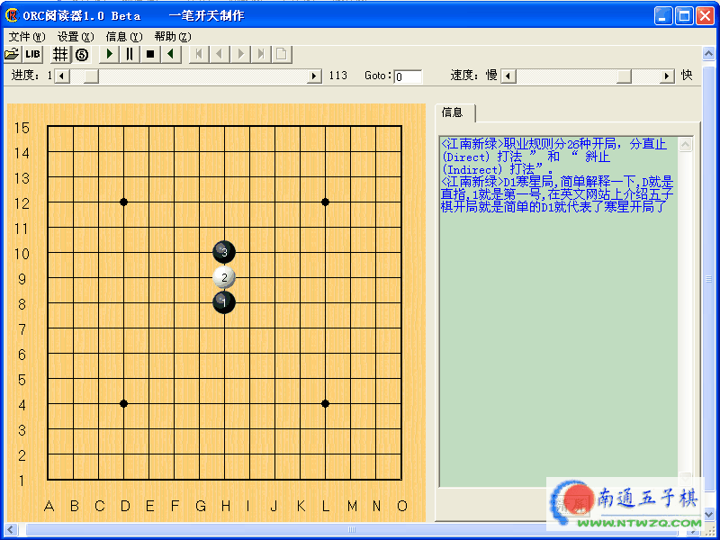

南通五子棋教学录像－《五子棋开局分析》
#1 南通五子棋教学录像－《五子棋开局分析》作者：有志青年 发表时间：2007-3-17 15:56:47
需要说明的是：
自从南通五子棋由gerbo发出连珠发展大讨论之后，得到许多五子棋前辈们的关心和支持。
和江南新绿交流之后作出了如下初步打算〔仅是尝试，未确定〕：
1、定期发布orc课件，网友可以下载之后用ORC阅读器软件打开[鼠标右键点击盘面就可以看到老师讲解了，点击左键则退后一步]
2、将现有南通五子棋网站上的丰富资源定期整理成电子书，供网友下载收藏。
今天发布的是昨晚讨论之后，江南新绿连夜赶制的orc课件《五子棋开局分析》！
因为是初次尝试，课件内容还不够充实，还略显稚嫩，在此我们真心的期待得到大家的建议。

 五子棋开局分析.rar
五子棋开局分析.rar网友可以下载之后用ORC阅读器软件打开[鼠标右键点击盘面就可以看到老师讲解了，点击左键则退后一步]
#2 Re:南通五子棋教学录像－《五子棋开局分析》作者：超级塞亚人 发表时间：2007-3-17 20:37:33
江南新绿老师的ORC课件我下下来看了,很感激能有这样的机会看到系统地分析开局的教程.
但是我有几点建议:
1,课程的阅读界面不是很友好,
2,看棋谱的时候又要同时看旁边的字,还要控制速度.
3,有时候精神一分散就不知道老师讲的是什么.
我很希望老师的课程做成是CSF格式的视频教程,每一节课大约在45分钟左右
这样的话,一课的视频文件应该在60-70M左右.而且大家还能看见老师本人.
现在很多大学的视频教程都是做成CSF格式的,真的很不错.
#3 Re:南通五子棋教学录像－《五子棋开局分析》作者：有志青年 发表时间：2007-3-17 20:39:56
速度问题，可以使用鼠标左右键来控制，你试试点击棋盘
#4 Re:南通五子棋教学录像－《五子棋开局分析》作者：江南新绿 发表时间：2007-3-18 9:29:23
很感谢2楼的意见.但不知如何操作.能否达到软件的配置要求.#5 Re:南通五子棋教学录像－《五子棋开局分析》作者：ss511 发表时间：2007-3-18 10:14:39
我是菜鸟，请多多指教
#6 Re:南通五子棋教学录像－《五子棋开局分析》作者：Joy 发表时间：2007-3-18 16:46:58
我不知道怎么下载,有谁能告诉我吗?谢谢
#7 Re:Re:南通五子棋教学录像－《五子棋开局分析》作者：有志青年 发表时间：2007-3-18 18:36:10
引用：
原文由 Joy 发表于 2007-3-18 16:46:58 :我不知道怎么下载,有谁能告诉我吗?谢谢
1下载之后用ORC阅读器软件〔请点击超链接〕
2、运行软件
3、文件菜单，选择打开，打开内容就是您下载的课件。
4、打开课件之后，鼠标左键、右键点击棋盘分别是前进和后退。〔不需要点击播放〕
您再试试
#8 Re:南通五子棋教学录像－《五子棋开局分析》作者：人工智能 发表时间：2007-3-18 20:11:05
好东西 必须顶上去 希望好东西源源不断
#9 Re:南通五子棋教学录像－《五子棋开局分析》作者：伊莉贝尔 发表时间：2007-5-8 20:43:26
学习了,谢谢
#10 Re:南通五子棋教学录像－《五子棋开局分析》作者：啊丫呀 发表时间：2007-5-10 20:33:35
今天才看到，好好哦！谢谢老师们！
#11 Re:南通五子棋教学录像－《五子棋开局分析》作者：小丸.net 发表时间：2007-5-11 23:23:34
有志，江南新绿都付出来幸苦的劳动。让我们汗颜。#12 Re:南通五子棋教学录像－《五子棋开局分析》作者：5子~学遥 发表时间：2007-8-29 17:41:15
去哪下载录象啊!额!#13 Re:南通五子棋教学录像－《五子棋开局分析》作者：5子~学遥 发表时间：2007-8-29 17:42:38
看到了!不好意思!
网友可以下载之后用ORC阅读器软件打开[鼠标右键点击盘面就可以看到老师讲解了，点击左键则退后一步]
#14 Re:南通五子棋教学录像－《五子棋开局分析》作者：【弈缘】狂人 发表时间：2007-8-29 18:10:52
我也试着弄一下 先谢谢楼主啊#15 Re:南通五子棋教学录像－《五子棋开局分析》作者：freedo 发表时间：2007-8-31 9:22:27
好东西啊 谢谢你的分享
#16 Re:南通五子棋教学录像－《五子棋开局分析》作者：古道东疯 发表时间：2007-9-10 21:29:25
感激老师提供，下来学习一下，不知能看懂不？ 俺很笨的
#17 Re:南通五子棋教学录像－《五子棋开局分析》作者：zyhua 发表时间：2007-9-14 19:55:18
来学习学习#18 Re:南通五子棋教学录像－《五子棋开局分析》作者：cqkxzh 发表时间：2007-9-19 10:55:20
#19 Re:南通五子棋教学录像－《五子棋开局分析》作者：qq7308 发表时间：2007-11-22 21:05:57
很喜欢~#20 Re:南通五子棋教学录像－《五子棋开局分析》作者：天空传说 发表时间：2008-7-28 0:56:21
为什么下不下来呢？#21 Re:南通五子棋教学录像－《五子棋开局分析》作者：刘黑白 发表时间：2009-2-11 18:33:10
好东西啊！谢谢啦#22 Re:南通五子棋教学录像－《五子棋开局分析》作者：星月族 发表时间：2009-12-14 16:53:10
已下载,慢慢学习吧